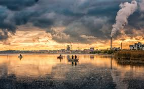
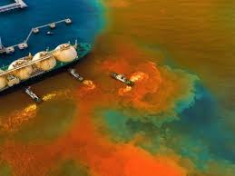
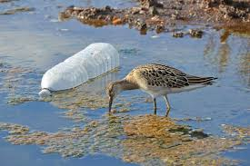
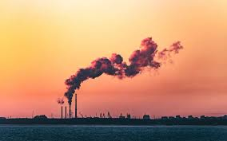

INICIO
Contaminacion del agua
¿Qué es la contaminación del agua?
La contaminación del agua es la alteración de la calidad del agua debido a la introducción de sustancias nocivas
provenientes de actividades humanas.
Este fenómeno afecta ríos, lagos, océanos y acuíferos, poniendo en riesgo la
salud humana, los ecosistemas y la biodiversidad.

Causas de la Contaminación del Agua
- Actividades Industriales
- Agricultura Intensiva
- Vertidos Urbanos y Domésticos
- Contaminación por Plásticos
- Contaminación por Derrames de Petróleo

Soluciones para Combatir la Contaminación del Agua
- Tratamiento de Aguas Residuales
- Uso Responsable de Productos Químicos
- Educación y Concienciación
- Legislación y Regulación
C
U
I
D
E
M
O
S
E
L
A
G
U
A